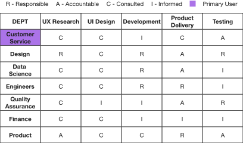
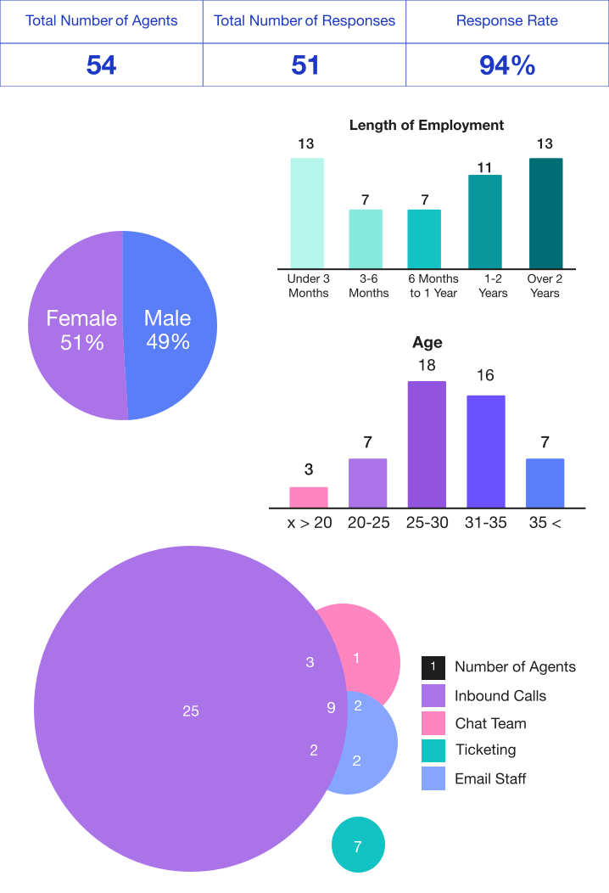

Sastaticket - Order Management System
One of my first professional projects as a product designer was redesigning the Order Management System of an online travel agency.

Responsibility Matrix
This project had various stakeholder departments whose involvement is defined in the responsibility matrix.

Process Map
Stakeholder details...
Click on the numbers to learn more about each stakeholder group.


Survey for CS Agents
To better understand our target audience, we conducted a demographic survey of the customer service team. This helped us develop personas and cater to their needs. At the time of the survey, the CS team consisted of about 54 agents and 4 managerial leads.
We began by understanding the make up of the CS team. At the time of the survey, the CS team consisted of about 54 agents and 4 managerial leads.
In terms of gender the CS team is balanced with almost equal ratios of men to women.
A majority of the CS agents fell into two age brackets 25-30 and 31-35. The most illuminating factor however was length of employment which revealed that approximately 25% of agents had been working for under 3 months, while over 47% had been working for over a year.
Finally the CS team is also broken up into smaller teams based on what aspects of customer queries they deal with. Inbound calls is where the majority operate, with over laps into other teams.
These insights helped us develop personas and cater to the needs of the different user groups.
Customer Service Personas

The New Recruit
Recently joined Sastaticket in the last year. Has worked mostly on inbound calls team. Struggles with new inqueries and relies on support form their seniors and manage.Finds it difficult to keep track of the workflows and may make mistakes in calculations.

The Experienced Agent
Has worked between 1-2 Years at Sastaticket. Focused on customer satisfaction and time management. But, while multitasking, may struggle with miscommunication and miscommitment. Frustrated with the limitations of the current OMS.

The Seasoned Professional
Has worked at Sastaticket for over 2 years. Has an adaptive approach to customer service. Knows how to speak to customers and has worked in 3-4 sub-teams of CS Dept. Has found ways to work around the limitations of the current OMS. Takes on the role of a guide or a leader.
Design System
We developed a design system that presented order information clearly did not overwhelm the user and used a system of color coding to highlight important data.

Impact
| User Metric | Sept 2021 | Oct 2022 |
|---|---|---|
| First Call Resolution | 65% | Learning |
| Average Handling Time | 4 mins | 2.75 mins |
| Average Customer Wait Time | 3 mins | 1.5 mins |
| Customer Satisfaction Score | 3/5 | 4/5 |
| Net Promoter Score | 8 | 9 |
| User Satisfaction | 70% | 87.5% |